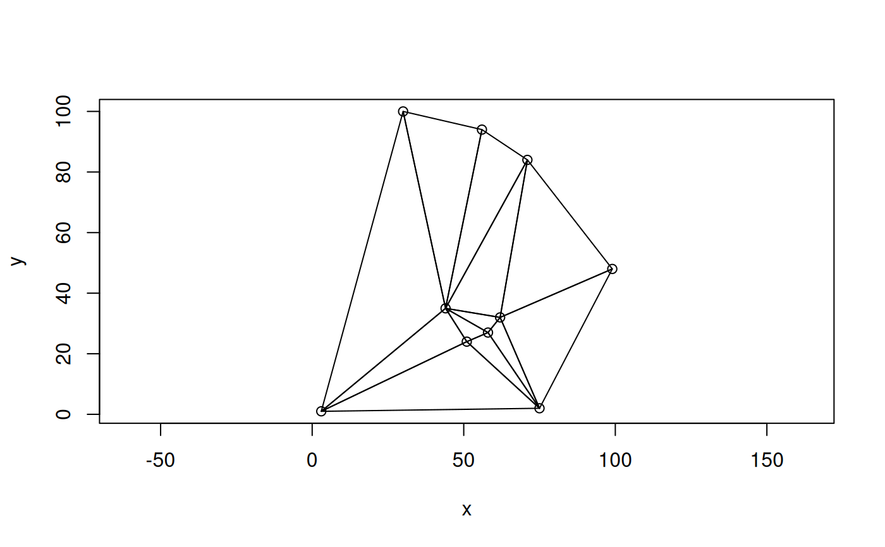

plot_geom() plots one or more geometries given as either WKT or WKB raw
vectors, using wk::wk_plot().
Arguments
- x
Either a character vector containing one or more WKT strings, a raw vector of WKB, or a list of WKB raw vectors.
- xlab
Title for the x axis.
- ylab
Title for the y axis.
- main
The main title (on top).
- ...
Optional arguments passed to
wk::wk_plot().
Examples
# a Delaunay triangulation of 10 random points
set.seed(4)
x <- sample.int(100, 10)
y <- sample.int(100, 10)
g <- g_create("MULTIPOINT", cbind(x, y))
g_wk2wk(g)
#> [1] "MULTIPOINT (75 2,51 24,3 1,71 84,44 35,58 27,99 48,56 94,30 100,62 32)"
plot_geom(g)
g2 <- g_delaunay_triangulation(g)
g_wk2wk(g2)
#> [1] "GEOMETRYCOLLECTION (POLYGON ((30 100,3 1,44 35,30 100)),POLYGON ((30 100,44 35,56 94,30 100)),POLYGON ((56 94,44 35,71 84,56 94)),POLYGON ((71 84,44 35,62 32,71 84)),POLYGON ((71 84,62 32,99 48,71 84)),POLYGON ((99 48,62 32,75 2,99 48)),POLYGON ((75 2,62 32,58 27,75 2)),POLYGON ((75 2,58 27,51 24,75 2)),POLYGON ((75 2,51 24,3 1,75 2)),POLYGON ((3 1,51 24,44 35,3 1)),POLYGON ((44 35,51 24,58 27,44 35)),POLYGON ((44 35,58 27,62 32,44 35)))"
plot_geom(g2, add = TRUE)
